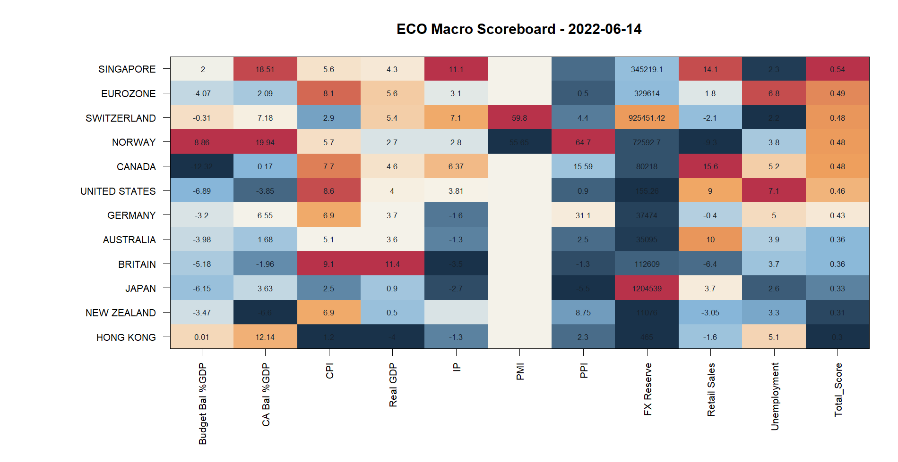
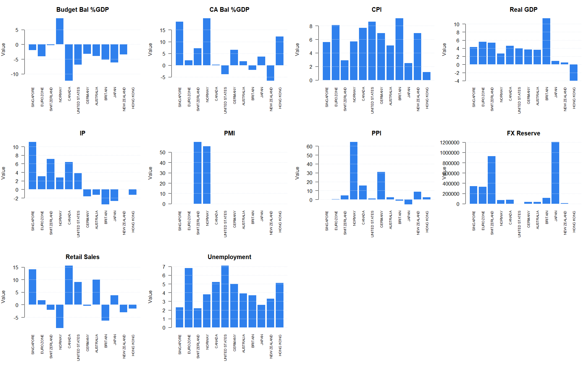
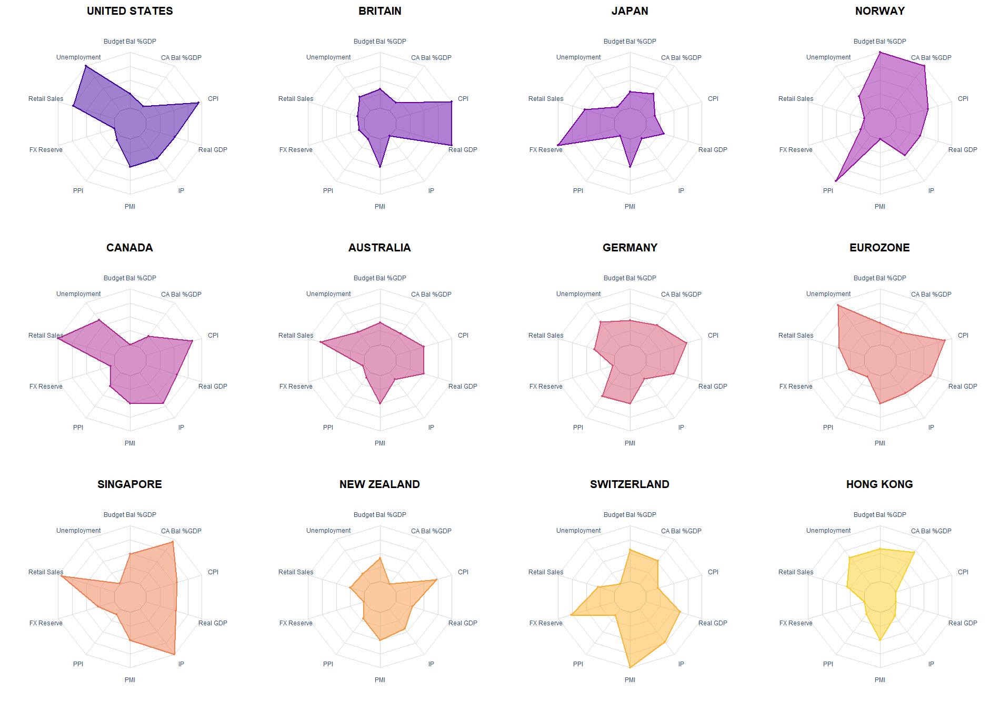

| Country | Budget Bal %GDP | CA Bal %GDP | CPI | Real GDP | IP | PMI | PPI | FX Reserve | Retail Sales | Unemployment | Total_Score |
|---|---|---|---|---|---|---|---|---|---|---|---|
| SINGAPORE | -2.00 | 18.51 | 5.6 | 4.300 | 11.10 | NA | NA | 345219.10 | 14.10 | 2.3 | 0.5389928 |
| EUROZONE | -4.07 | 2.09 | 8.1 | 5.600 | 3.10 | NA | 0.50 | 329614.00 | 1.80 | 6.8 | 0.4909376 |
| SWITZERLAND | -0.31 | 7.18 | 2.9 | 5.400 | 7.10 | 59.80 | 4.40 | 925451.42 | -2.10 | 2.2 | 0.4836323 |
| NORWAY | 8.86 | 19.94 | 5.7 | 2.700 | 2.80 | 55.65 | 64.70 | 72592.70 | -9.30 | 3.8 | 0.4822867 |
| CANADA | -12.32 | 0.17 | 7.7 | 4.604 | 6.37 | NA | 15.59 | 80218.00 | 15.60 | 5.2 | 0.4791749 |
| UNITED STATES | -6.89 | -3.85 | 8.6 | 4.000 | 3.81 | NA | 0.90 | 155.26 | 9.00 | 7.1 | 0.4642973 |
| GERMANY | -3.20 | 6.55 | 6.9 | 3.700 | -1.60 | NA | 31.10 | 37474.00 | -0.40 | 5.0 | 0.4258941 |
| AUSTRALIA | -3.98 | 1.68 | 5.1 | 3.600 | -1.30 | NA | 2.50 | 35095.00 | 10.00 | 3.9 | 0.3608622 |
| BRITAIN | -5.18 | -1.96 | 9.1 | 11.400 | -3.50 | NA | -1.30 | 112609.00 | -6.40 | 3.7 | 0.3587729 |
| JAPAN | -6.15 | 3.63 | 2.5 | 0.900 | -2.70 | NA | -5.50 | 1204539.00 | 3.70 | 2.6 | 0.3318023 |
| NEW ZEALAND | -3.47 | -6.60 | 6.9 | 0.500 | NA | NA | 8.75 | 11076.00 | -3.05 | 3.3 | 0.3050633 |
| HONG KONG | 0.01 | 12.14 | 1.2 | -4.000 | -1.30 | NA | 2.30 | 465.00 | -1.60 | 5.1 | 0.2951384 |